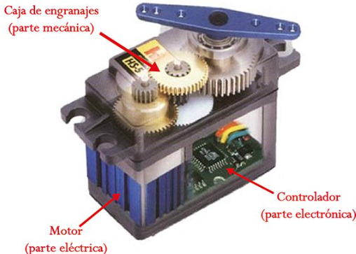
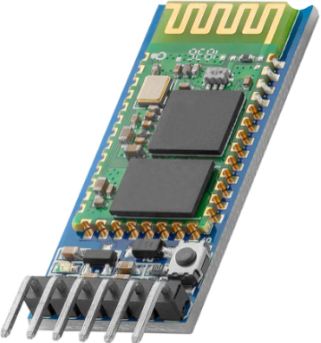

Manejo de motores
Para su desplazamiento, PonchoBot viene provisto con dos motores servos de giro completo (360°). Los mismos tienen un reducido consumo de energía y no necesitan electrónica adicional para ser conectados a la placa Arduino Nano. Esto representa dos ventajas:
- Posibilidad de alimentar todo el circuito con una power bank recargable.
- Simplicidad en el circuito y la programación, para el control de los motores.
Además se cuenta con un módulo bluetooth HC-05 que permite controlar a PonchoBot a distancia desde el móvil.
El desafío final en esta propuesta es controlar de forma autónoma, los movimientos de PonchoBot desde nuestro celular.
¡¡ Comencemos !!